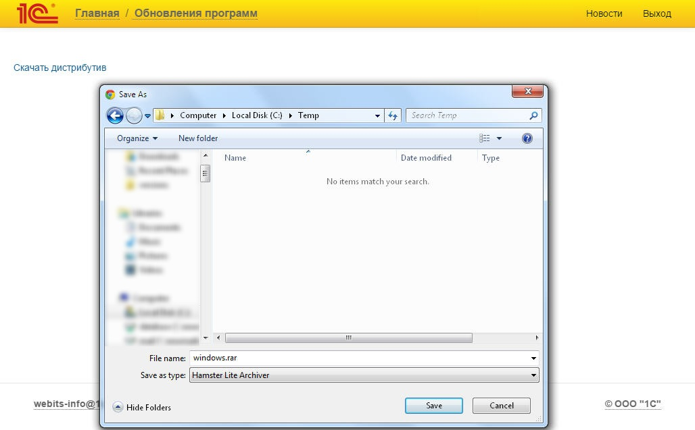
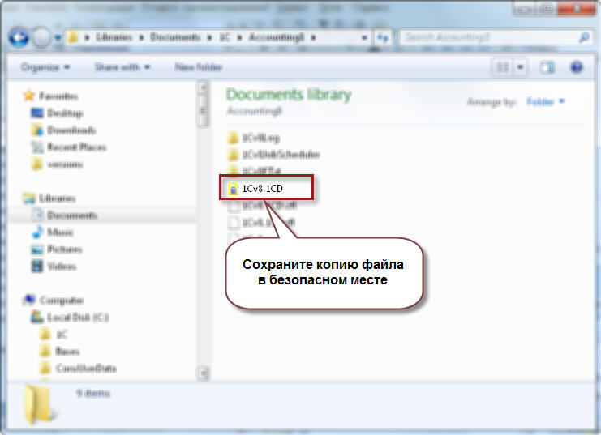

Скачайте дистрибутив последней версии платформы 1С:Предприятия 8.3 в сервисе "1С:Обновление программ" на портале 1С:ИТС (portal.1c.ru). При необходимости
укажите логин и пароль.
Далее следует выбрать актуальную (последнюю официально опубликованную) версию технологической платформы
Для скачивания файла перейдите в раздел «Технологическая платформа 1С:Предприятия для Windows»:

Далее, по ссылке "Скачать дистрибутив" откроется диалог сохранения файла на диск. Запомните папку, в которую его сохранили:

Обратите внимание: для установки программы пользователь Windows должен обладать правами администратора! Распакуйте загруженный файл с архивом. В папке, в которую распаковали архив, найдите и запустите файл Setup.exe:

Далее следуйте инструкциям программы-установщика:

Определите и откройте каталог, в котором находится нужная база данных:


По кнопке "1С:Предприятие" можно начать работы с выбранной информационной базой на новой версии платформы.